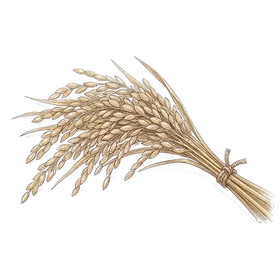
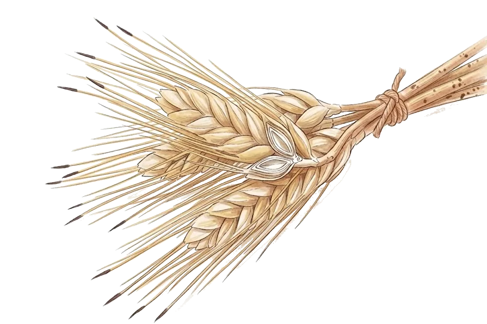
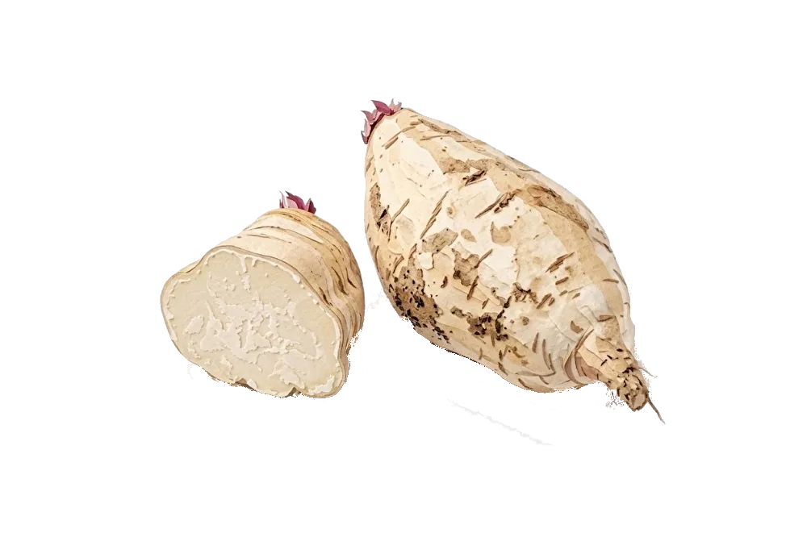

そんな小さな
気になるお酒の
日本酒ってどんなお酒？
① 米と水の「醸造酒」
米・米麹・水を発酵させて造る、日本の伝統的なお酒です。
② 世界一の「高い度数」
ワインやビールと同じ発酵酒の中で、世界一アルコール度数が高くなるお酒です。
③ 職人の「奇跡のスゴ技」
お米を麹の力で「甘くしながらアルコールに変える」、世界でも珍しい技術で造られます。
「甘口・辛口」って
どう決まるの？
味は「糖分」と「酸味」のバランス
酸味はひかえめ
甘口に感じる
酸味が強い
辛口に感じる
焼酎ってどんなお酒？
① 日本が誇る「蒸留酒」
穀物や芋を発酵させたあと、熱でアルコール分を取り出して造ります。
② 「糖質・プリン体ゼロ」
糖質もプリン体も含まない、すっきりしたお酒です。
③ 世界でも珍しい「お湯割り」
お湯で割って美味しく飲めるお酒は、世界でも希少。温めると香りがふわっと広がります。
「醸造」と「蒸留」のちがい



（これが「蒸留」）
蒸留すると、アルコール分と香りの成分が濃く集まります。
ウイスキーってどんなお酒？
① 穀物から生まれる「蒸留酒」
大麦などを発酵・蒸留し、樽で長い年月熟成させて造ります。
② できたては「無色透明」
造りたての原酒は、実は焼酎のように無色透明です。
③ 人間と自然の「共同作業」
琥珀色と甘い香りは、樽の中で眠ることで生まれます。人と自然の共同作業です。
特定名称酒の主な種類
名前は、
まずは
お米を削ってみましょう
つまみを右へ動かすと、お米がどんどん削れていきます。削る量によって、名乗れるお酒の名前が変わります。
お米の外側には雑味の成分があるため、削るほどスッキリとして華やかな香りが生まれやすくなります。
例えば「精米歩合60%」は、外側を40%削り落とし、中心部の60%だけを贅沢に使ったという意味になります。
特定名称酒の早見表
マスをタップすると、説明が表示されます。
※数字は精米歩合です。「吟醸」「大吟醸」と名乗るには、低温でじっくり発酵させる「吟醸造り」などの条件も必要です。
さまざまな「造り」
日本酒の味わいは、お米の削り方だけでなく、発酵や加熱処理といった細かな「造り」の違いでも大きく変化します。
代表的な製法をご紹介します。
「火入れ」は何回？
お酒の種類を選ぶと、火入れ（加熱殺菌）のタイミングが光ります。
吾熊の日本酒
現在、当店でご用意している日本酒です。
銘柄をタップすると、それぞれの特徴や味わいの解説を見ることができます。
※ご注文は口頭で承ります
※お名前などの個人情報は、入力しないでください。
※いただいたご意見は参考にさせていただきますが、仕入れをお約束するものではありません。あらかじめご了承ください。
原材料による「味」の違い
焼酎の楽しさは、原料の多彩さにあります。素材の個性がそのまま香りや味わいになるので、その日の気分やお料理に合わせて選んでみてください。
※アイコンをタップすると解説が表示されます
ラベルの正体
焼酎のラベルには、どんなふうに造られたかのヒントが詰まっています。言葉の意味を少し知るだけで、好みの一本が見つけやすくなります。
気圧で、味がかわる
※イメージ図です。ボタンを切り替えて、くらべてみてください。
吾熊の焼酎
現在、当店でご用意している焼酎です。
銘柄をタップすると、それぞれの特徴や味わいの解説を見ることができます。
※ご注文は口頭で承ります
※お名前などの個人情報は、入力しないでください。
※いただいたご意見は参考にさせていただきますが、仕入れをお約束するものではありません。あらかじめご了承ください。
ラベルの正体
ウイスキーのラベルは、お酒の「履歴書」のようなもの。どんな原料で、どこで造られたかが書かれています。言葉の意味が少しわかると、好みの一杯に出会いやすくなります。
ブレンドしてみましょう
つまみを動かして、モルトとグレーンの割合を変えてみましょう。
100%モルト
100%
※割合はイメージです。実際の配合は銘柄ごとに異なります。
世界のウイスキー
① 世界が認める「5つの産地」
有名な5つの産地は「世界5大ウイスキー」と呼ばれます。
② 実は「日本」もその1つ！
本場と並び、日本もトップ5に選ばれています。
③ 世界が注目する「ジャパニーズ」
繊細な技術が評価され、今はブームです。
さまざまな個性
ウイスキーの世界には、造り手のこだわりや、自然が生んだ偶然がたくさん。カウンターでつい話したくなる、ちょっとツウなお話をご紹介します。
「ピート（泥炭）」の秘密
ウイスキーの風味の大部分は「樽」で決まるとも言われます。以前何を入れていた樽かによって、お酒に驚くほどの魔法がかかるのです。
吾熊のウイスキー
現在、当店でご用意があるウイスキーです。
銘柄をタップすると、それぞれの特徴や味わいの解説を見ることができます。
※ご注文は口頭で承ります
※お名前などの個人情報は、入力しないでください。
※いただいたご意見は参考にさせていただきますが、仕入れをお約束するものではありません。あらかじめご了承ください。